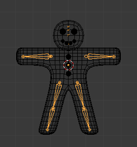

结构¶

非常基础的骨架示例。
骨架模仿了真实的骨架. 它们是由骨骼(默认情况下是刚体元素)组成的。但它超越了现实的骨头： 除了有真实骨头 与生俱来的 旋转外，还可以进行移动甚至缩放操作! 你的骨头可以不相互连接；如果你想，它们可以完全独立。然而大多数自然的和有用的骨骼设置意味着骨头之间是相互影响的, 形成所谓的 “骨骼链”, 创建骨架的 四肢, 详情见 骨骼链。
骨骼链¶
骨架里面的骨骼是可以完全相互独立的(例如修改其中的一根骨骼不会影响其它的骨骼).但这往往不是一个有用的设置: 要创建一个腿,大腿骨与之后的骨要很好的协调运行。正确的做法是在骨架里让一根骨骼连接到另外的一根父骨骼上，创建一个骨骼链。这些骨骼链可以有分支. 例如,5个手指骨连接到一个单独的"手"骨。

一个有两条骨骼链的骨架。
通过将父节点的尾端链接与子节点的首端链接到骨骼上。首端(Root) 和尾端(tip )可以 连接（connected） , 也就是说，它们总是在同一个点的; 或它们是完全 free（游离） 的，像一个标准的父子对象关系。
给定的骨骼可以是几个子骨骼的父骨骼，因此同时可以成为几条链的一部分。
在链的开头的骨骼被称为它的 首端骨骼（root bone） , 一个链中的最后一个骨骼叫 尾端骨骼（tip bone） （不要和它们具有类似名称的骨骼关节（joints）混淆）。
骨骼链在姿势（ posing ）是一个特别重要的话题 (特别是在 正向运动学 和 反向运动学 姿势技术). 您可以在 编辑模式 创建/ 编辑它们，但除了在连接骨骼的情况下，变换它们之间的关系没有任何影响，在这种模式下（即变换父骨将不会影响其子骨）。
管理骨骼关系的最简单的方法是使用关系面板 骨骼Bone 标签 Relations panel 面板。